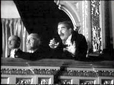

SpearheadNews.com
Super News
2003-2004

Auditions
Events
Rehearsal Schedules
Interviews
Photos
Reviews
More Fun Stuff!
The
Super Handbook
Tips, Tricks, and FAQs
San
Francisco Opera
Links
Classifieds
Contacts
Archives
Members Only
Spearheadnews.com is not officially affiliated with any
performing arts organization.
All photographs remain the property of their copyright holders.
©2003 SpearheadNews
All Rights Reserved
A Marxian Perspective
by Mark Burstein
Those of us familiar with the Marx Brothers’ A Night at the Opera and presently supering in Il trovatore have to work very hard to suppress the instinct to whip out Groucho glasses and shout "Boogie! Boogie! Boogie" as Dolora Zajick begins her fiery "Stride la vampa."
For
the curious, here are the complete operatic selections from that wonderful
movie.
I Pagliacci
Ballatella ("Stridono lassù" - Nedda): Kitty Carlisle
("Rosa Castaldi")
Il trovatore
•Overture (intermixed with "Take Me Out to
the Ballgame")
•Act II: "Stride la vampa" - Azucena:
Olga Dane (uncredited)
" The Anvil Chorus": M-G-M Symphony Orchestra and chorus
"Mal reggendo all’aspro assalto" somehow manages to segue
to "Di quella pira" (from Act III) - Manrico:
Walter Woolf King ("Rodolfo Lassparri")
•Act IV: "Miserere" - chorus / "Sull’orrida
torre" - Leonora / "Sconto col sangue mio" - Manrico: Kitty
Carlisle, Allan Jones ("Ricardo Baroni"). Repeated as encore.